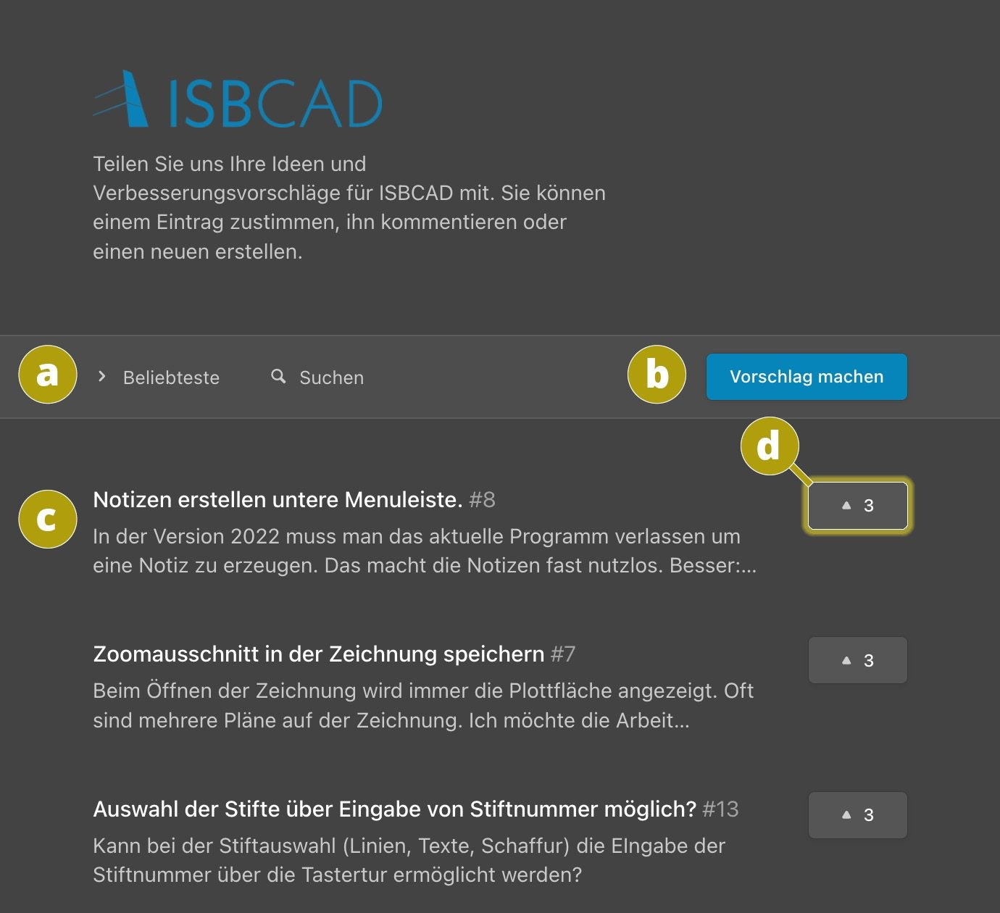

ISBCAD Menüleiste → Support
Auf der Plattform ISBCAD.NOLT können Sie Ideen für neue Funktionen, Erweiterungen oder Verbesserungen eintragen. Wir nutzen diese Informationen, um ISBCAD für Sie weiter zu verbessern.
Wir lesen jeden einzelnen Eintrag und bedanken uns, dass Sie sich die Zeit nehmen, um uns Ihren Vorschlag zu senden.
So funktioniert es
§Klicken Sie den Eintrag ISBCAD.NOLT - Ideenportal für ISBCAD an, um die Website https://isbcad.nolt.io/ in Ihrem Standardbrowser zu öffnen.
Wenn Sie sich mit Ihrem Google-, Twitter oder E-Mail-Account anmelden, stehen Ihnen alle Funktionen der Plattform zur Verfügung.
§Nutzen Sie anschließend die folgenden Möglichkeiten:
a)Sie können die Vorschläge nach einem bestimmten Kriterium sortieren und nach Stichworten suchen.
b)Tragen Sie über diese Schaltfläche einen Vorschlag ein (Überschrift + weitere Erläuterungen).
c)Klicken Sie einen Eintrag an, um ihn zu öffnen. Anschließend sehen Sie alle Kommentare und können selbst kommentieren.
d)Wenn Ihnen ein Vorschlag gefällt, geben Sie dem Eintrag einen Like. Ihr Like ist ein wichtiger Beitrag, über den wir erfahren, ob eine Idee auf breite Zustimmung stößt, und ggf. im Entwicklungszyklus berücksichtigt wird.
 |
Zugehörige Referenz: